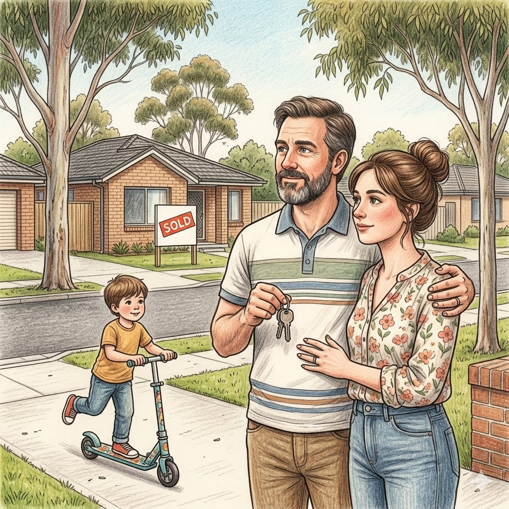
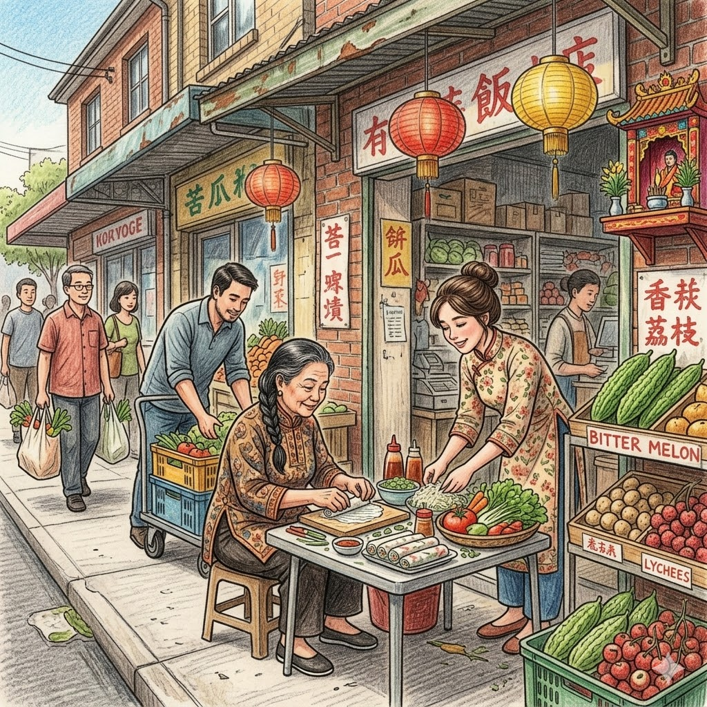
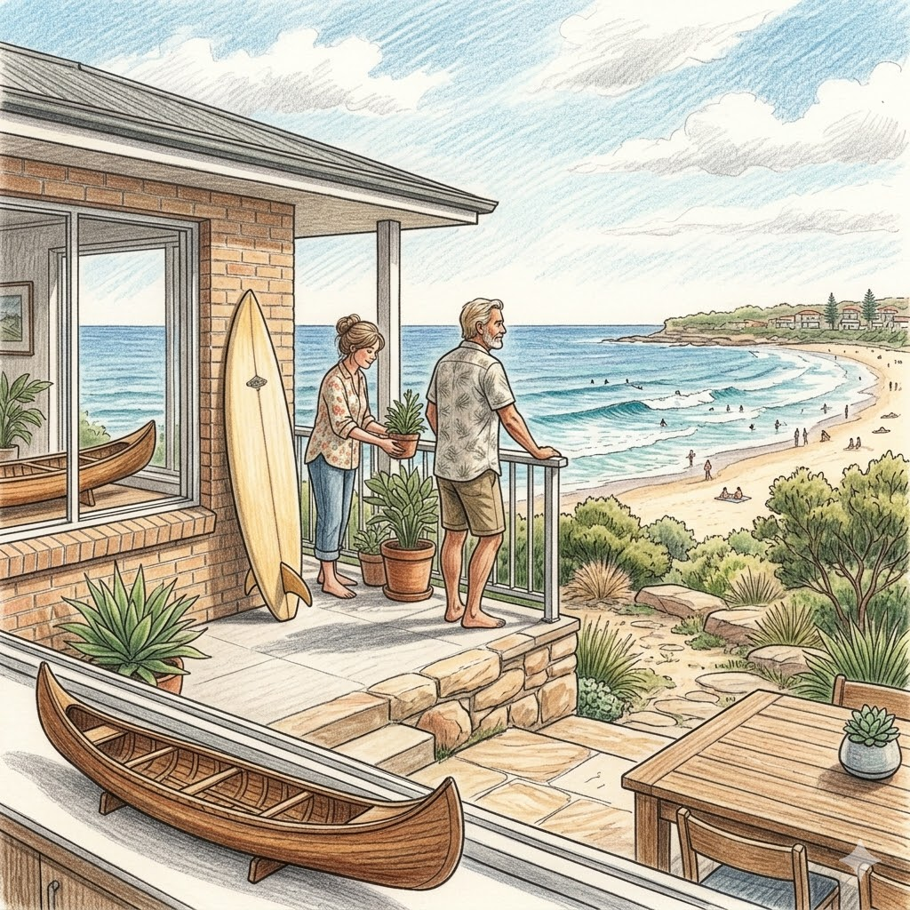
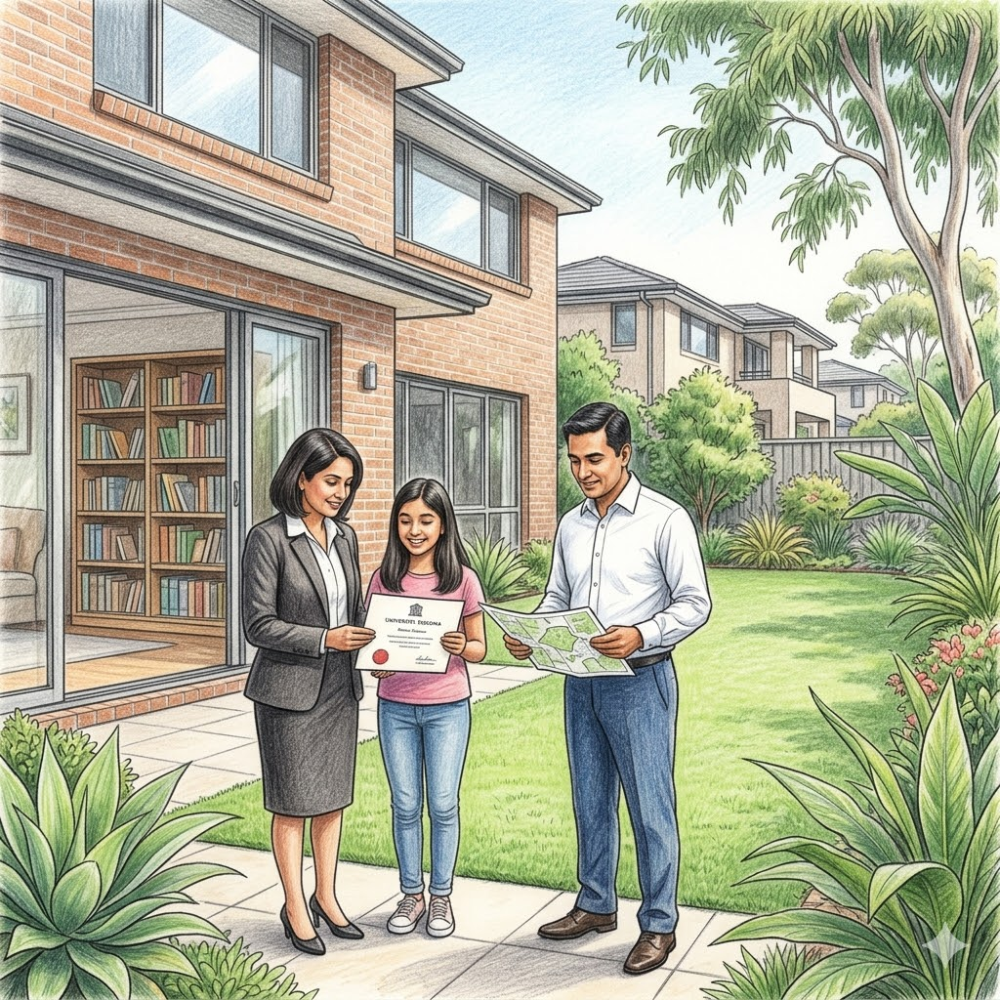
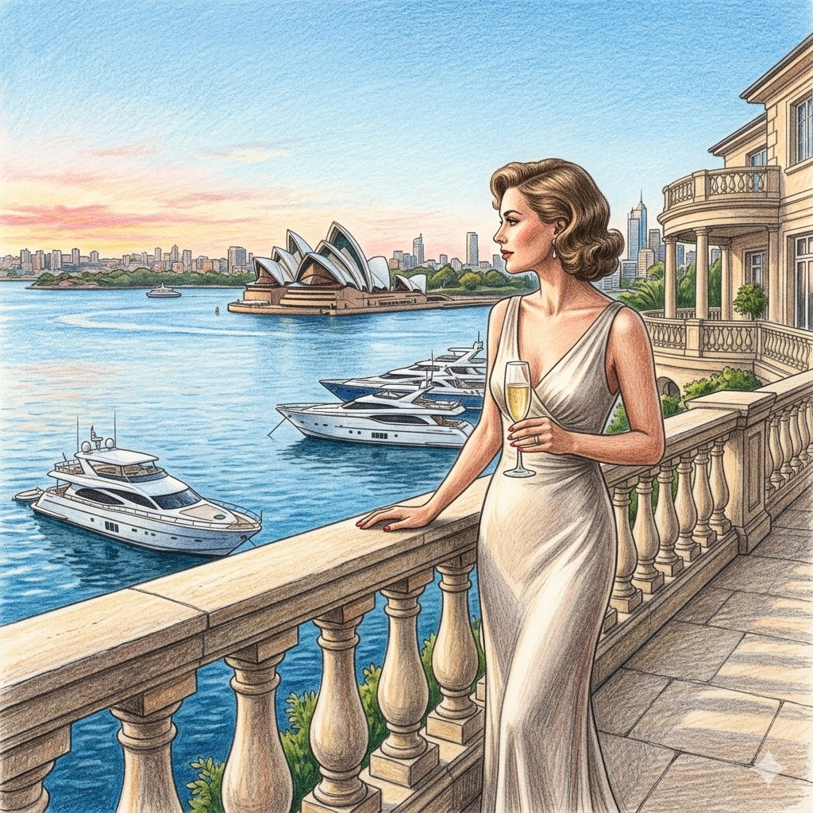
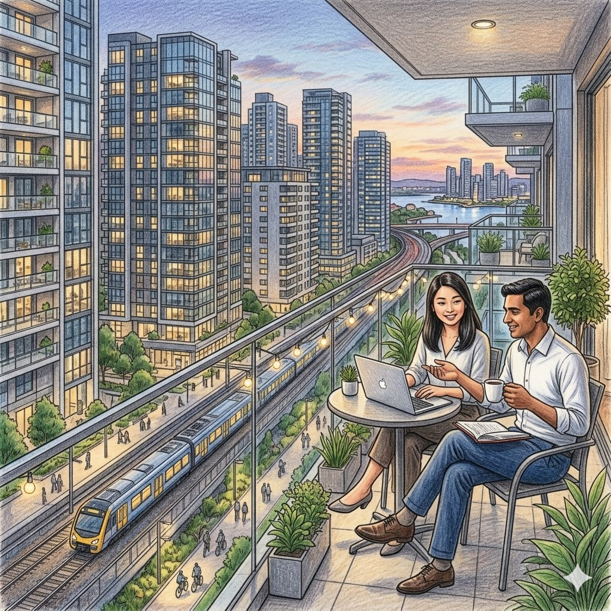
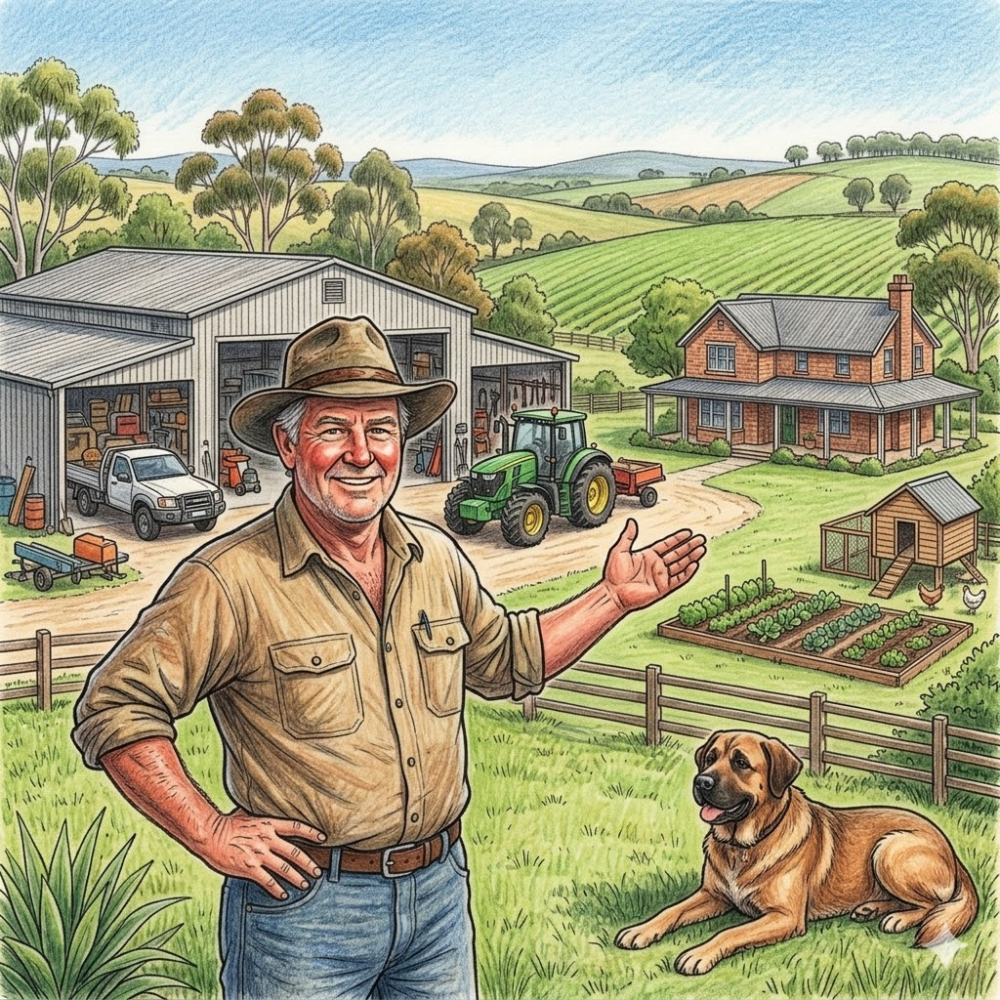

The Eight Subcultures
The model classifies residents into one of these eight groups based on 8 socio-economic features derived from synthetic ABS census data.

Inner-City Creative
Young renters in creative, academic and hospitality industries. High university education, diverse but predominantly English-speaking. High rental density.

Aspirational Westie
Working and middle-class families in the outer west. Multicultural, moderate income, mix of renters and owner-occupiers, striving for home ownership.

Cultural Enclave
Communities with high overseas-born populations and non-English home language. Strong ethnic identity, lower income, moderate renting rates.

Surf-Urbanite
Older, high-income owner-occupiers in coastal and upper-northern suburbs. Predominantly Anglo-Australian, high English-only, strong property wealth.

Diaspora Professional
High-income, university-educated overseas-born homeowners in the Hills District. Non-English background, professionally established, strong property ownership.

Harbor Elite
Ultra-high-income professionals in the Eastern Suburbs harbourside. Law, finance and medicine. Prestige real estate, predominantly Anglo-Australian and European heritage.

Vertical Cosmopolitan
Young professionals in high-density rail-corridor apartments. First-generation East Asian and Indian migrants. Extremely high rental rates and non-English home language.

Semi-Rural Lifestyle Dweller
Successful tradespeople and business owners on the urban fringe. Large land holdings, high household income, low university rates, predominantly Anglo-Australian.